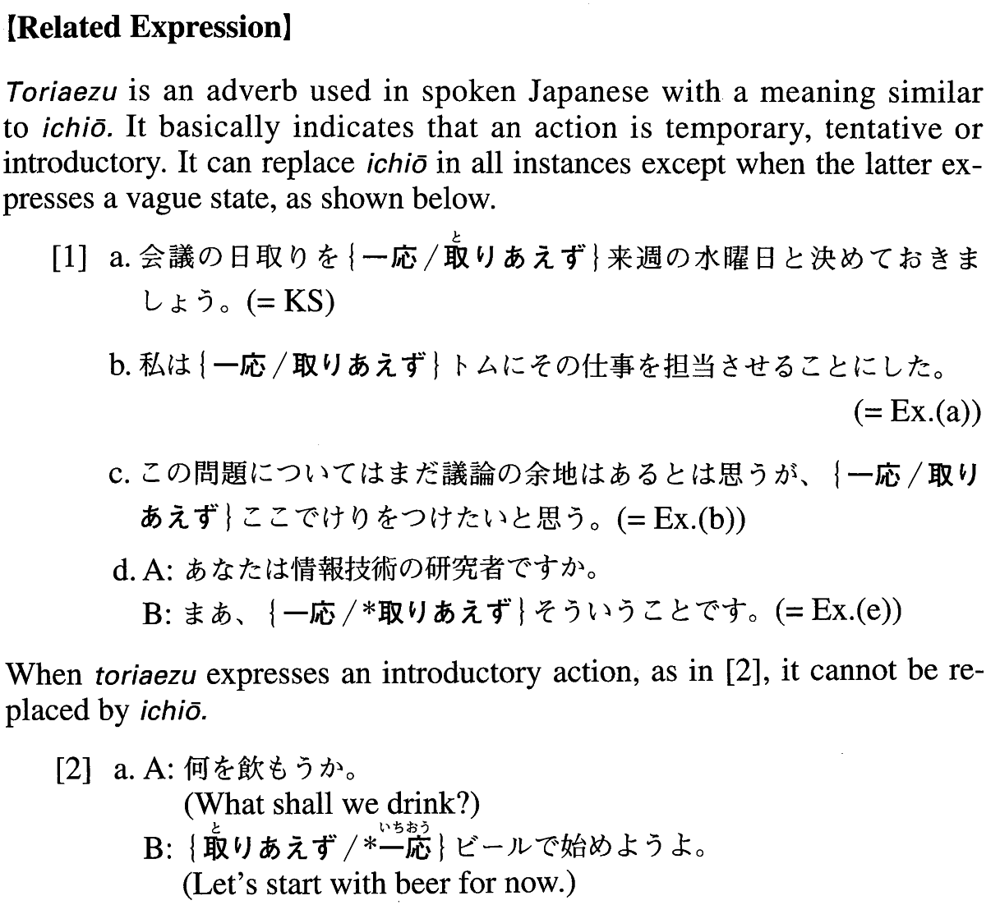

一応 (A. 126)
- (ks).
- 会議の日取りを一応来週の水曜日と決めておきましょう。
- Let's tentatively set our meeting date for next Wednesday.
- (a).
- 私は一応トムにその仕事を担当させることにした。
- I've put Tom in charge of the project for the time being.
- (b).
- この問題についてはまだ議論の余地はあるとは思うが、一応ここでけりをつけたいと思う。
- I believe that on this issue there is still a lot to be discussed, but I'd like to bring it to a close for the time being.
- (c).
- 一応大学を出ておいた方が都合がいいと思い、大学に進学したんです。
- I thought it would be better for me to graduate from college, to keep up appearances. That's why I went on to college.
- (d).
- A:コンピュータを使っていらっしゃいますか。 B:はあ、まあ、一応は使っていますが。
- A: Are you using a computer? B: Well, I'm kind of using one, but . . .
- (e).
- A:あなたは情報技術の研究者ですか。 B:まあ、一応そういうことです。
- A: Are you an IT researcher? B: Yes, sort of.
- (f).
- A:このお金どうするの? B:俺が一応銀行に入れておくよ。
- A: What are you going to do with this money? B: I will put it in the bank for now.
- (g).
- 二人は兄弟と言うだけに頭は、まあ、一応似ている。しかし気性はかなり違う。
- The two are brothers, so their faces do sort of resemble each other. But, their temperaments are quite different.
- (h).
- すみません。これでも一応大学教師なんです。
- Sorry, (I know I don't look like one,) but I am in fact a college professor.
- (i).
- 滅多に買わない店だけど、名前くらいは一応覚えてもらっているから安くしてくれるかもしれない。
- It's a store where I seldom buy things, but they sort of know my name, so they might discount the price for me.
